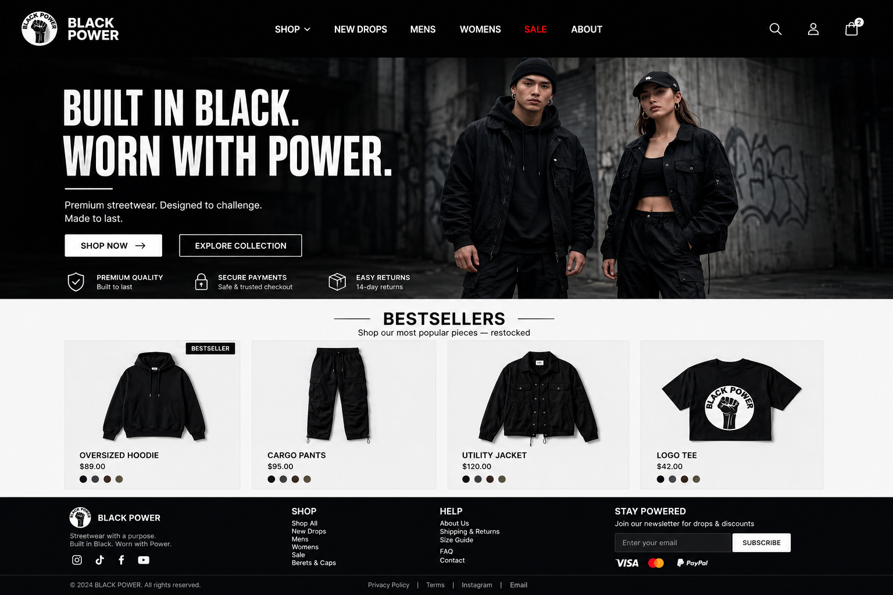
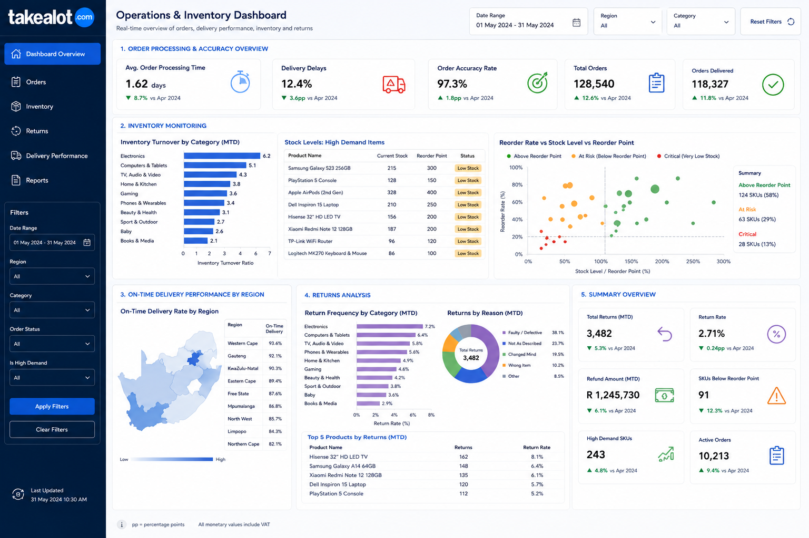
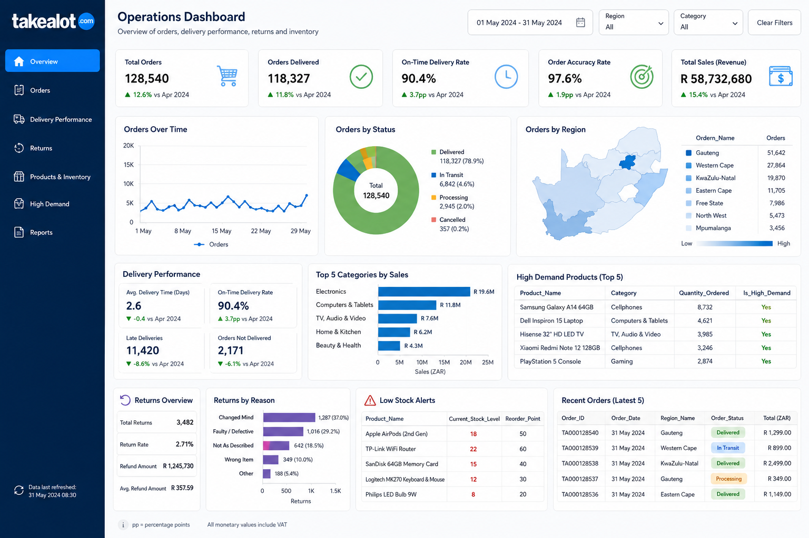

01
Data & reporting
Turn raw information into reports people can understand and act on.
BUSINESS SYSTEMS · DATA · WEB
I'm Awonke Gana, with a background in Business Management and Information Systems through coursework at Nelson Mandela University. I use data, business analysis and web technologies to make information more useful and digital experiences more practical.
01 / ABOUT
I enjoy finding ways to make work clearer: organising data, mapping processes, designing dashboards and building useful digital tools.
— AwonkeMy studies combine business management and information systems. I am developing practical experience across analytics, databases, process modelling and front-end development. I value solutions that are understandable, accessible and connected to real business needs.
Bachelor's degree in Business Management and Information Systems
BPMN · Business Systems · Analytics02 / TOOLKIT
A growing toolkit across analytics, systems and digital experiences.
Turn raw information into reports people can understand and act on.
Work with structured data, queries and relational database concepts.
Build responsive interfaces, practical online catalogues, web applications and search-friendly pages.
Understand business needs and communicate processes clearly.
03 / SELECTED WORK
Coursework, team development and portfolio projects focused on practical problems.

E-COMMERCE / FRONT ENDAn online platform concept supporting Black culture and community through clothing, accessories, free books and job listings. Planned with a Google Sheets product source and WhatsApp checkout to avoid maintaining a traditional database.
Discuss this project ↗
OPERATIONS ANALYTICSA dashboard project exploring order processing, delivery delays, order accuracy, inventory turnover, reorder levels, regional delivery performance and customer returns.
A team-built driving school application. Contributed to a C#/.NET MVC solution, using Bootstrap and CSS to support the interface and user experience.
SELECT business_problem,
useful_insight
FROM structured_data
WHERE answer_matters = TRUE;Practice with relational data, joins, primary and foreign keys, referential integrity, entity relationships, normalisation and query logic.

DATA STORYTELLINGDashboard work across Excel, Power BI and SAS, with attention to clear KPIs, readable visuals, filters and useful business context.
Business process modelling and systems analysis coursework focused on describing workflows, identifying requirements and making processes easier to understand.
Project descriptions reflect portfolio and coursework work. Some projects are concepts or team contributions; details can be discussed during an interview.
04 / HOW I CAN HELP
Available for carefully scoped freelance tasks, internships and junior opportunities.
Sales trackers, stock lists, formulas, cleaning and simple reporting.
Clear KPIs and charts using client-provided, appropriately shared data.
Responsive landing pages and basic product catalogues for small businesses.
Clean layouts, spelling checks and professional document presentation.
Currently open to: internships, entry-level opportunities, small paid digital projects and collaborations.
Get in touch on WhatsApp ↗05 / CONTACT
Have a junior opportunity, a small digital task or a project idea? Send a message and tell me what you need.